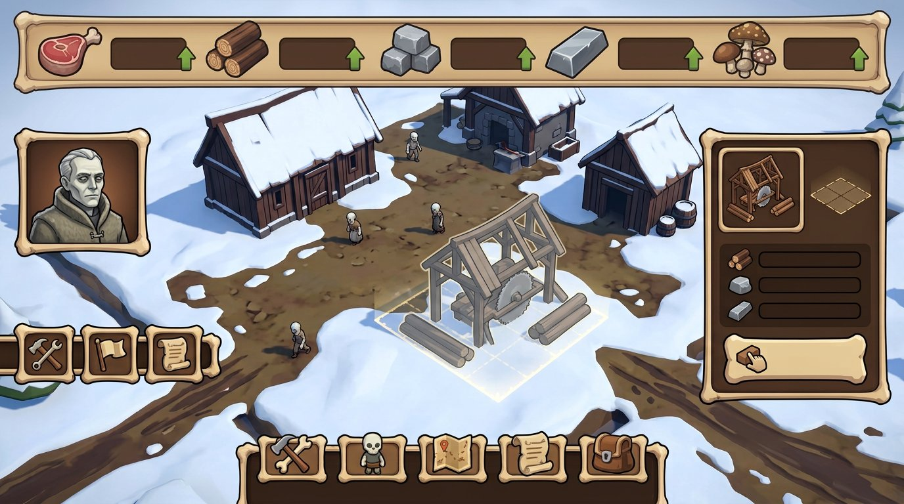
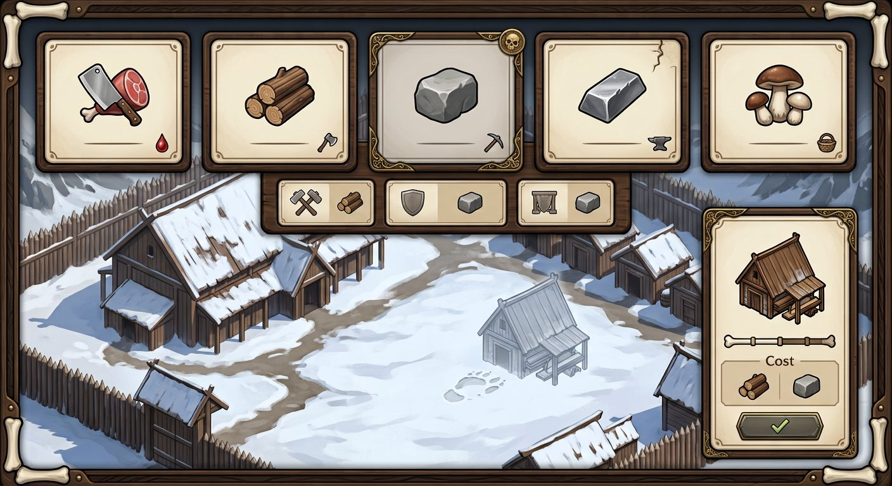
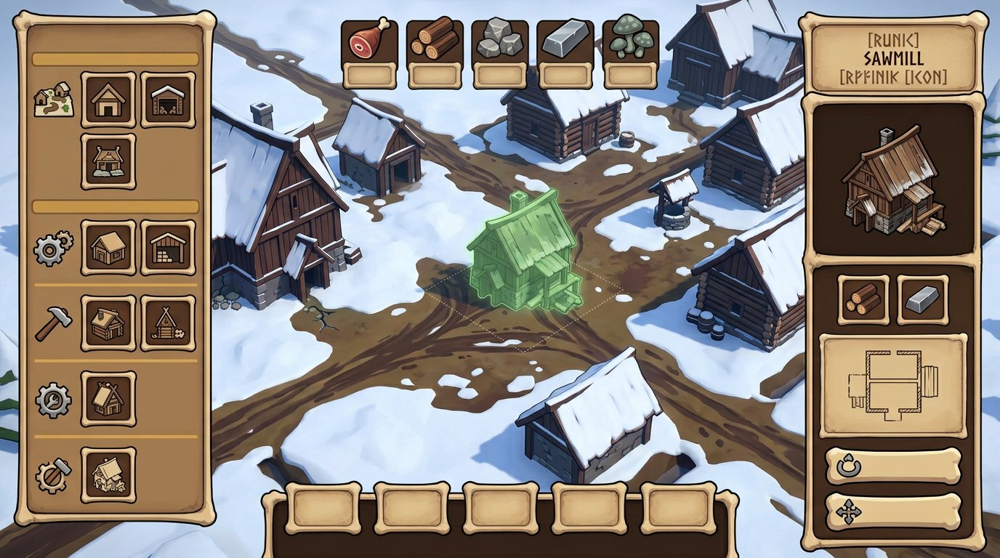
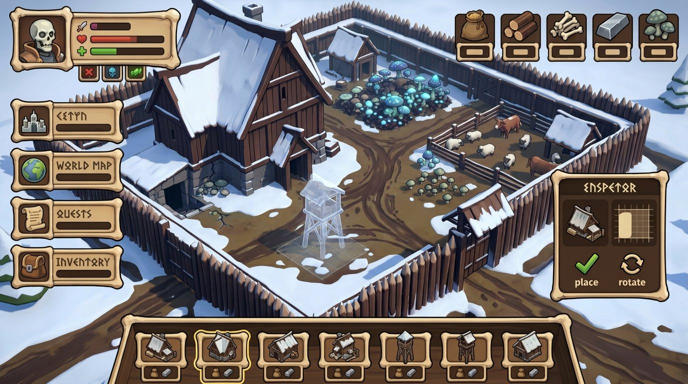
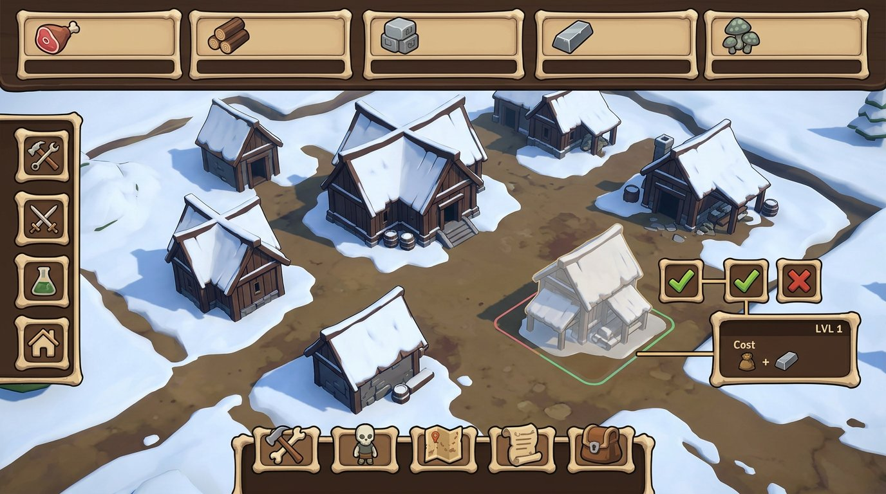
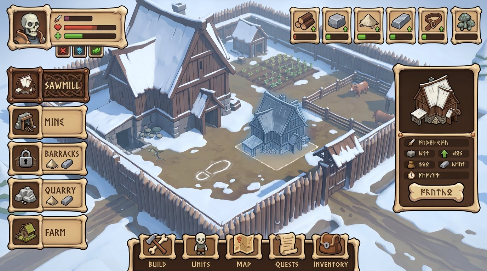
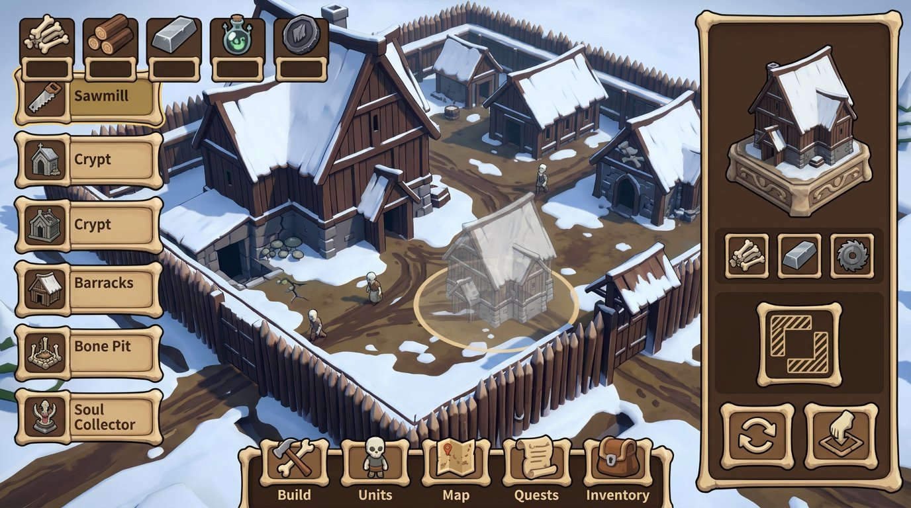
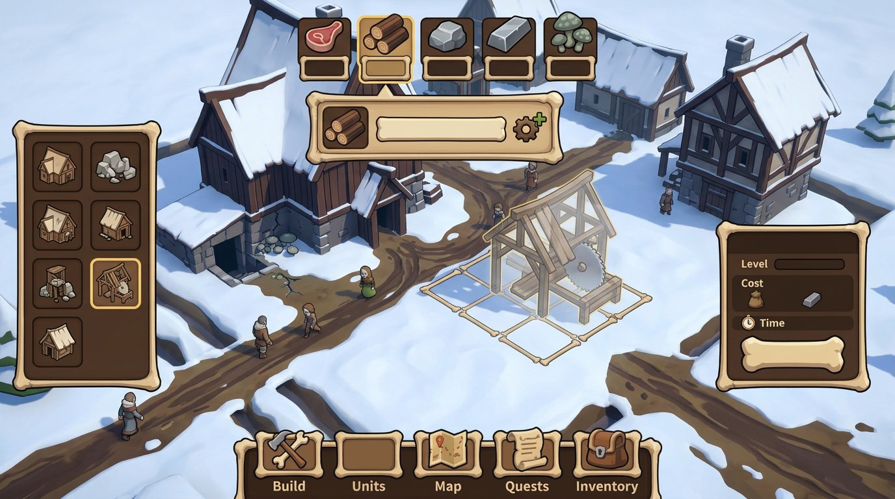
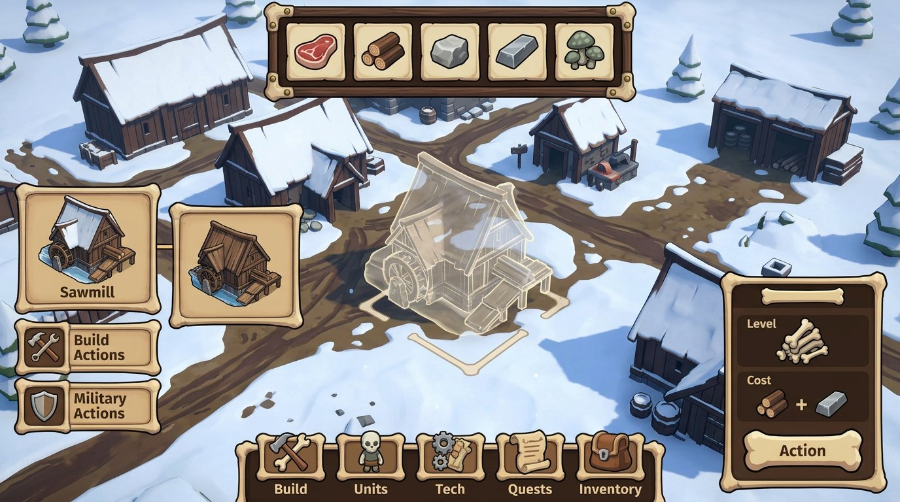
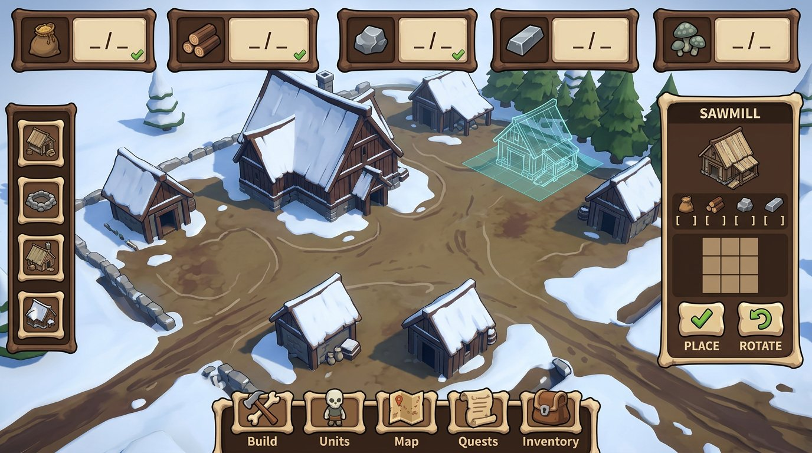

{kind=link}
Ресурс: иконка + запас
Пять одинаково устроенных ячеек быстро сравниваются; грибы визуально остаются отдельным ресурсом исследований и навыков, не пищей.
The Dead Lords · Bone-Wood · refinement 05
Понял уточнение: основа здесь — именно стиль № 02 Bone-Wood из первой серии, а не изображения № 02/09 из другого набора. Все десять картинок — полные игровые UI-экраны в одной выбранной стилистике; меняются организация HUD, ячеек и строительной панели, чтобы можно было выбрать основу.
Пять одинаково устроенных ячеек быстро сравниваются; грибы визуально остаются отдельным ресурсом исследований и навыков, не пищей.
В карточке используется чистый силуэт постройки и небольшие чипы стоимости из той же системы ресурсов.
Инспектор и полупрозрачный призрак относятся к одному объекту; контур установки помогает, но не задаёт заранее место.
Все варианты сохраняют Bone-Wood; сравнивайте композицию, плотность панелей и логику ячеек. Надписи и числа, которые модель дорисовала внутри картинок, считать заглушками.

Профиль лорда, пять ресурсных ячеек, контекстная карточка и нижняя навигация собраны вокруг свободного двора.

Ячейка получает место для количества и маленького маркера состояния, а не только крупную иконку.

Категории строительства собраны слева, выбранная постройка и её footprint — справа.

Строительная полка находится у пальца, но остаётся отдельной от постоянной навигации.

Меньше панелей поверх сцены; главное действие размещения читается по призраку и трём знакам.

Состояние строительной ячейки различается рамкой и значком, а не только сменой цвета.

Одна и та же постройка видна в карточке и как выбранный объект на поле; каталог остаётся компактным.

Активный ресурс может раскрыться, не превращая постоянный HUD в тяжёлую таблицу.

Сцена остаётся почти открытой, а нужные сведения сгруппированы у краёв и в одном инспекторе.

Наиболее полный синтез: пять ресурсов, каталог, открытая сцена, призрак и связанный инспектор.
{kind=link}
{kind=link}
{kind=link}
{kind=link}
{kind=link}
{kind=link}
{kind=link}
{kind=link}
{kind=link}
{kind=link}